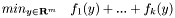
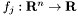
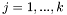
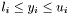
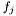

The ConicBundle Library for Convex Optimization
ConicBundle is a callable library for C/C++ that implements a bundle method for solving

for convex functions , .
Besides the standard first order oracle interface, the library offers a number of special features:
- Upper and lower bounds may be specified for each design variable () .
- Instead of one common cutting plane model for the entire objective function, each function  has its own cutting model in order to improve convergence.
- It provides substantial support for Lagrangean relaxation, i.e. if the problem corresponds to finding the optimal dual multipliers obtained by relaxing linear constraints in a relaxation or decompostion of a primal problem.
- It allows to generate approximate primal optimal solutions.
- It supports cutting plane approaches by allowing dynamic addition and deletion of dual variables without loss of quality in the cutting models.
- For experts the code offers special cutting models for linear programs over the nonnegative orthant, the second order cone, and the cone of real symmetric positive semidefinite matrices.
The library comes with three variants of interfaces:
The first two only use standard types and constructs of the respective languages, the third interface relies heavily on a subpackage of matrix classes also provided with this software.
Here is a short outline of the Manual:
- Attention:
- Anything free comes without guarantee. This program is distributed in the hope that it will be useful, but WITHOUT ANY WARRANTY; without even the implied warranty of MERCHANTABILITY or FITNESS FOR A PARTICULAR PURPOSE.
Copyright (C) 2005-2008 Christoph Helmberg